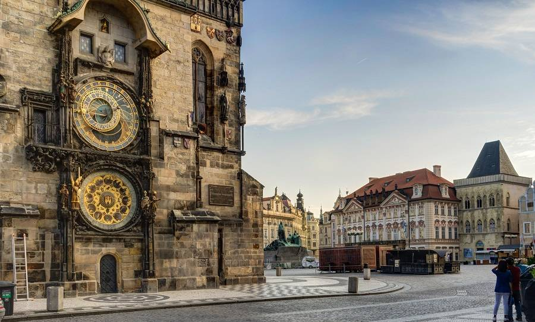

Экскурсия по Праге
Образовательный проект, создающий целостный маршрут по ключевым объектам культурного наследия города.
Городская Ратуша и астрономические часы
Staroměstská radnice Городская Ратуша и астрономические часы — комплекс зданий, построенный в разных стилях. На южной стене ратуши находятся астрономические часы. Самым заметным элементом достопримечательности является высокая башня с готическим шпилем, откуда открывается панорамный вид на Прагу. Астрономические часы состоят из трех основных частей: астрономического циферблата, календарного циферблата и механизма, который каждый час выпускает фигурки апостолов и другие движущиеся элементы: Смерть с песочными часами, Турка и так далее. Часы показывают не только время, но и фазы Луны и положение Солнца.
Городская Ратуша на карте
О проекте и источники
Автор: Кузнецова Софья Александровна ученица, Класс: 9«а», школа.
Руководитель: Рябцева Юлия Ариевна.
Краткая цель: Создать познавательный и визуально привлекательный экскурсионный маршрут по Праге, который поможет школьникам познакомиться с культурно-историческим наследием Европы и вызвать положительное отношение к европейской культуре.